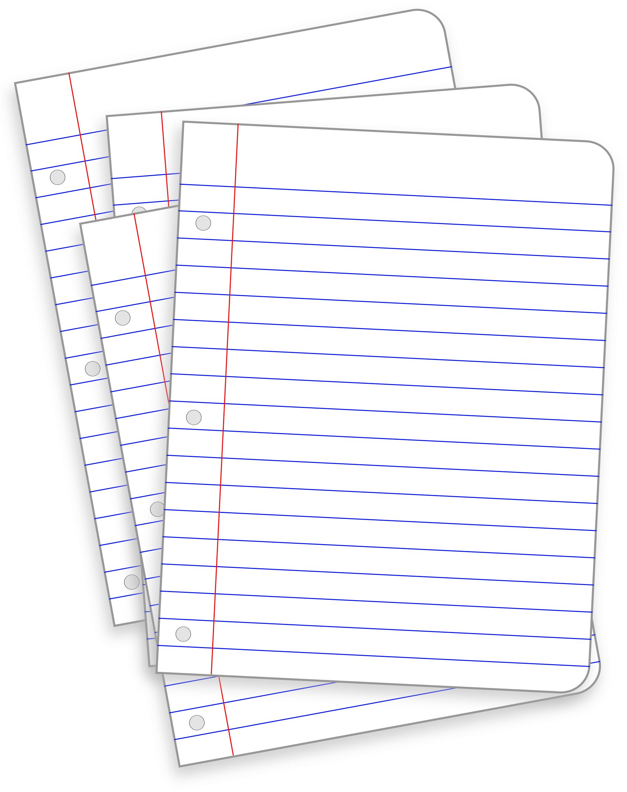
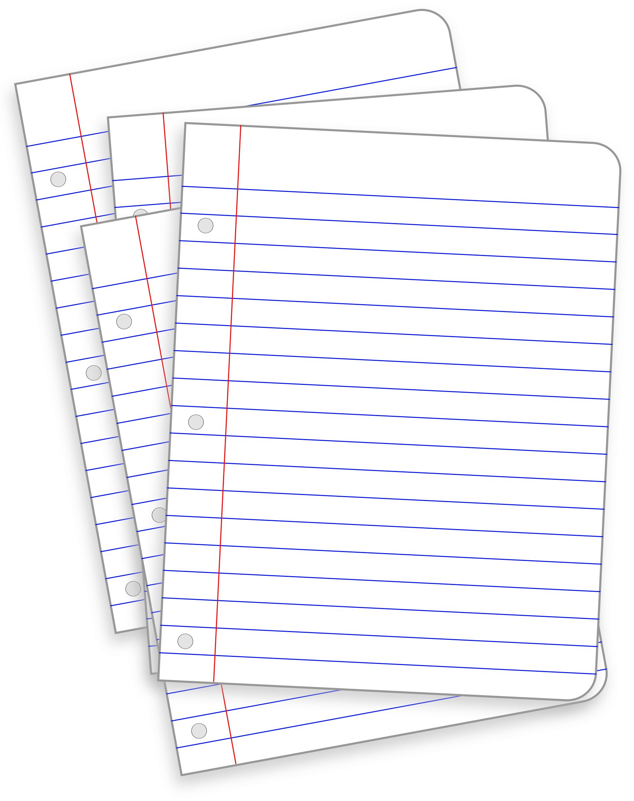

Challenge
The overall challenge of this assignment was to get used to the idea of writing pseudocode by breaking down problems into high-level instructions.
Problems
For Task 1 of this lab we created pseudocode for an everyday task. We chose to consult online recipes
own personal experience to create instructions for making lemonade.
For Task 2 we created pseudocode
for a computer task. We chose to write pseudocode for a rock-paper-scissors game.
For Task 3 we turned
the pseudocode for the computer task into comments.
We encountered few issues while completing these
tasks but had a little difficulty stream-lining our lists to be simple yet descriptive.
Results
Task 1: Making Lemonade
- Place pitcher on counter
- Cut 6 seedless lemons in half
- Squeeze all lemon halves into pitcher
- Pour 3 cups of cold water into the pitcher
- Add one cup of granulated white sugar into the pitcher
- Mix all ingredients thoroughly with spoon
- Add ice cubes to glass
- Pour serving of lemonade into glass
Task 2: Creating a Rock Paper Scissors Game
- Create a list of play options
- Rock, Paper, Scissors
- Have the computer randomly select one of the list options
- Use randomizer function for play options 0-2
- Ask for user input
- Test for win condition/tie
- Use if/else if/else statements to compare player and computer inputs
Task 3: Commenting the pseudocode for Rock-Paper-Scissors:
// Import random integer function
// Make an array of strings containing "Rock", "Paper", and "Scissors"
// Assign a random play to the computer from 0-2 using random integer picker function
//(rock = 0, paper = 1, scissors = 3)
// Ask for user input
// Use conditionals to test for appropriate input
// If not one of the 3 options, print error
// Test for win condition using if else statements
// If user_input beats computer_input
// Print "YOU WIN" - user_input + " beats " + computer_input + "!"
// If else computer_input beats user_input
// Print "YOU LOSE" - computer_input + " beats " + user_input + " :("
// Else
// Print "It's a tie!"